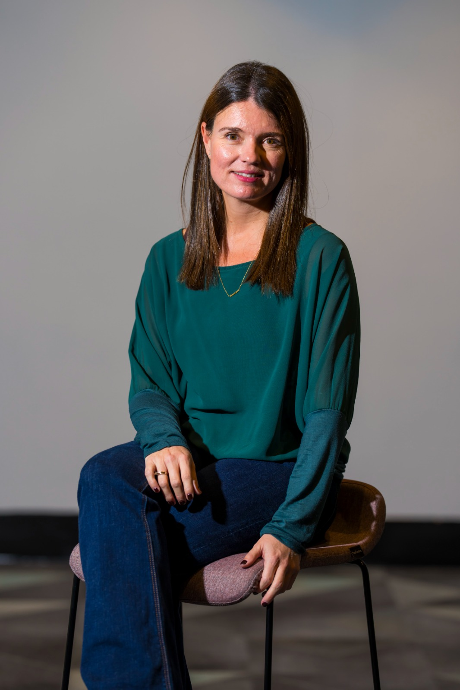

Procesos individuales para profesionales que están en un momento de transición y quieren tomar las riendas — de su carrera, de su comunicación, de su vida.

Llevas tiempo sintiéndote fuera de lugar en tu trabajo o en tu carrera, pero no logras ver con claridad hacia dónde ir — ni cómo llegar.
En reuniones, en entrevistas o en tu vida cotidiana sientes que lo que proyectas no refleja quién realmente eres. Tu comunicación no te está representando.
Un cambio de trabajo, una separación, un éxito que no te satisface. Momentos en que todo se tambalea y necesitas a alguien que te ayude a rehacerte.
Desde una sesión puntual de 40 minutos hasta un proceso transformador a medida. A tu ritmo y desde cualquier lugar.
Para momentos de quiebre, reinvención profesional o cuando ya no quieres seguir igual. Un proceso a medida, a tu ritmo, con objetivos concretos.
Sesiones ágiles de 40 minutos para desbloqueos puntuales e inmediatos. Reserva directa con pago anticipado. Sin proceso, sin compromisos.
Reservar sesión →Aprende a gestionar tu tiempo y tu energía — no solo tu agenda. Módulos prácticos desde cualquier lugar, con acceso de por vida.
Ver programa completo →Aprende a comunicar quién eres con claridad e impacto. Basado en neurociencia aplicada, con módulos prácticos y opción de pago fraccionado. El programa con el que Ana P. consiguió el puesto que tanto deseaba — seis meses después.
Ver temario completo →¿Representas a una empresa y buscas programas corporativos?
Ver servicios para empresas →"Laura me ayudó a encontrar claridad en el momento más exigente de mi carrera. Su combinación de rigor metodológico y profunda empatía es única e irrepetible."
"Su programa de Neurocomunicación cambió completamente cómo me percibo y comunico profesionalmente. Seis meses después conseguí el puesto que tanto deseaba."
Sin compromisos, sin presión. Solo una conversación honesta sobre dónde estás y hacia dónde quieres ir.
Reservar mi llamada gratuita O escríbeme directamente: hola@lauragonzalezortizdezarate.com